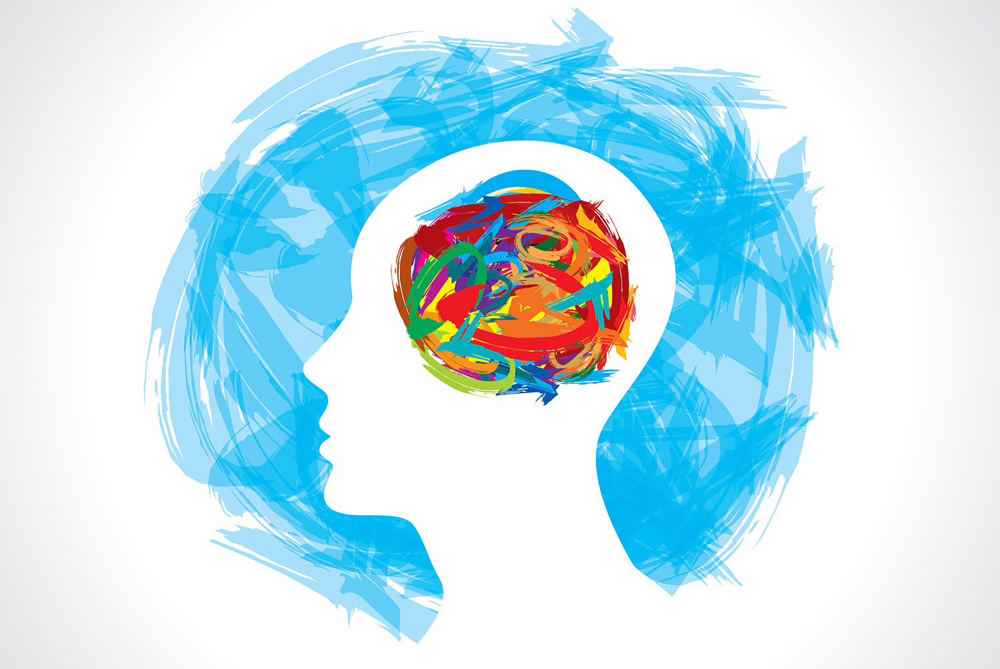
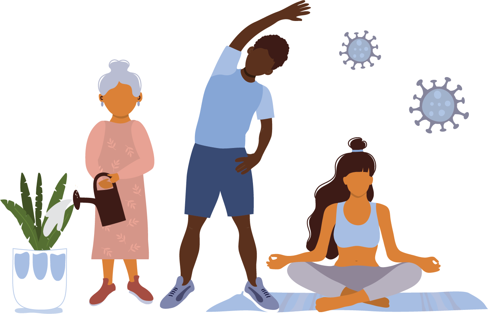
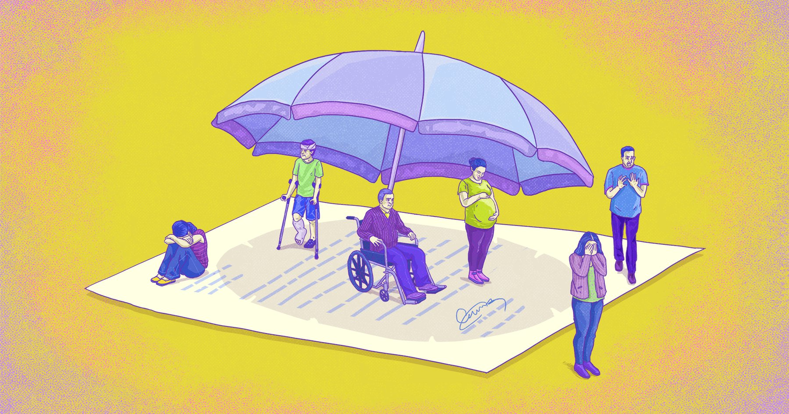

D'paz es una organización que nació por parte de un tema social con un enfoque tecnológico realizado por Society of Women Coder (OWS).D´paz fomenta la Salud Mental en El Salvador y el resto del mundo. Buscamos informar, ayudar y destacar lo bueno y lo maravillosa que es la vida ante todo queremos que te sientas en confianza y no olvides ¡Eres muy importante!
La salud mental abarca el bienestar general de una persona según la manera en que piensa, regula sus sentimientos y se comporta. A veces, las personas experimentan una importante perturbación en este funcionamiento mental. Puede haber un trastorno mental cuando los patrones o cambios en el pensamiento, los sentimientos o el comportamiento causan angustia o alteran la capacidad de funcionamiento de una persona. Un trastorno de salud mental puede afectar la capacidad para lo siguiente:
La importancia de una salud mental plena radica en que, ante su ausencia, la persona es incapaz de desenvolverse adecuadamente en la sociedad, incluyendo el campo laboral y estudiantil. También su ausencia suele comprometer la salud física de la persona, generando patologías y enfermedades que pueden llegar a ser crónicas.
La Organización Mundial de la Salud ha clasificado a la depresión como el principal factor que contribuye a la discapacidad mundial (más del 7.5% de todos los años vividos con discapacidad en el 2015) y en la sexta posición se encuentran los trastornos de ansiedad (3.4%).
Las principales ventajas de que contar con una adecuada salud mental son las siguientes:
El miedo, la preocupación y el estrés son respuestas normales en momentos en los que nos enfrentamos a la incertidumbre, o a lo desconocido o a situaciones de cambios o crisis. Así que es normal y comprensible que la gente experimentara o siga experimentando estos sentimientos en el contexto de la pandemia COVID-19.
Al temor de contraer el virus en una pandemia como la de COVID-19, se suma el impacto de los importantes cambios en nuestra vida cotidiana provocados por los esfuerzos para contener y frenar la propagación del virus. Ante las nuevas y desafiantes realidades de distanciamiento físico, el trabajo desde el hogar, el desempleo temporal, la educación de los niños en el hogar y la falta de contacto físico con los seres queridos y amigos, es importante que cuidemos tanto nuestra salud física como mental.
Lo cierto es que a la pandemia dio lugar a poner en cuenta la salud mental como prioridad para una vida plena.
Sabiendo que es Salud Mental y lo importante que es esta, podemos notar como está ausente en nuestras vidas, en la actualidad hay tanta desinformación que incluso se piensa que bienestar significa Salud Física pues la que por años tomamos en cuenta y que por medio de esta nos hacemos "más fuertes" pero más allá de esto no nos damos cuenta que, ante todo para amar debes amarte, para vivir debes reconocer tus aciertos y desaciertos, debes caer 100 veces pero aun así, sabes cuánto vale en la vida y en la de tus seres cercanos.
En El Salvador, de media, cada día al menos una persona se quita la vida. La tasa de suicidios en El Salvador es de 10,72 por cada 100.000 habitantes, por encima de la media de suicidios a nivel mundial, que es de 9,57 por cada 100.000 habitantes.
El Mundo necesita un cambio de mentalidad y debemos comenzar con quienes ya son conscientes de la importancia de vivir plenamente, dejar perjuicios, diferencias y unirnos para sentirnos seguros de expresarnos libremente y que en cada hogar se hablé abiertamente de cómo se siente cada uno y así los vínculos afectivos sean cada vez más fuertes.
Las personas con trastornos de ansiedad responden a ciertos objetos o situaciones con miedo y temor. Tienen reacciones físicas ante dichos objetos, como palpitaciones y sudoración. Se diagnostica un trastorno de ansiedad cuando una persona:
Los trastornos alimenticios involucran emociones, actitudes y comportamientos extremos relacionados con el peso y la comida. Entre los trastornos alimenticios más comunes se incluyen:
Los trastornos mentales y del uso de sustancias comparten algunas causas subyacentes, como los cambios en la composición del cerebro, las vulnerabilidades genéticas y el contacto temprano con el estrés o el trauma.
Los trastornos de uso de sustancias pueden referirse al uso o a la dependencia de sustancias. Entre los síntomas de estos trastornos se pueden encontrar:
Estos trastornos, también denominados trastornos afectivos, pueden implicar:
Los trastornos del estado de ánimo más comunes son:
El suicidio genera sentimientos de dolor, sufrimiento y pérdida incalculables para las personas, familias y comunidades de todo el país, entonces es importante saber qué hacer.
Señales de advertencia del suicidio: